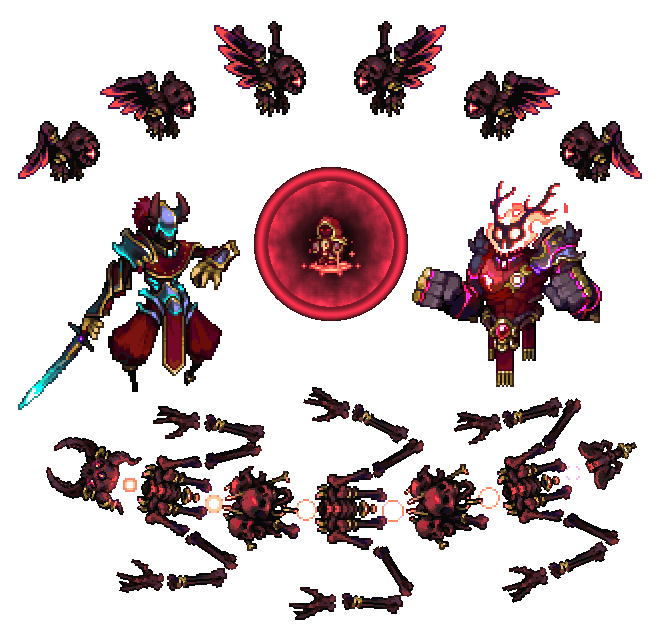

// ВНИМАНИЕ: Зафиксирован критический уровень урона. Любая ошибка приведет к мгновенной дезинтеграции. Система защиты: 25% Снижение Урона. Рекомендуется использовать только самые мощные атаки и избегать прямого контакта.
_CONFRONT_THE_DOOM_